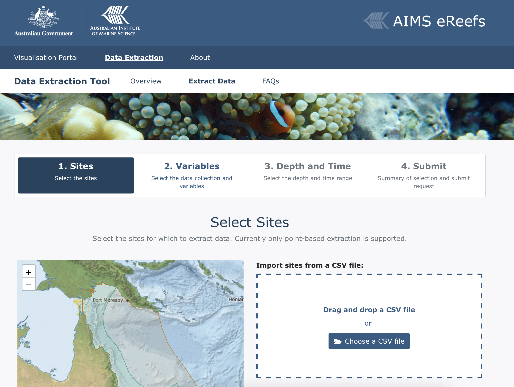
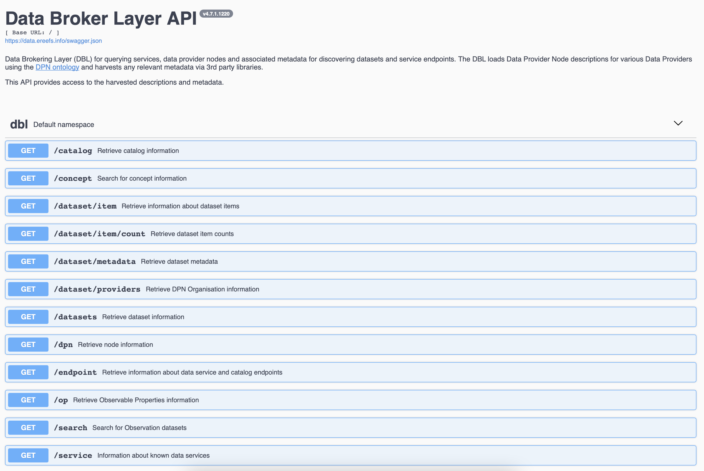

Data formats and access¶
This material is from the eReefs Data Workshop - Great Barrier Reef Marine Park Authority & BOM, and the eReefs Research from CSIRO.
Now that you’ve got a bit more of a handle on how the eReefs data are generated we’re going to look at how you can access them.
To do this we are going to talk briefly about the data files and their structure, then give you an overview of how to access them.
Key outcomes:
By the end of this section, you will know that:
eReefs data uses a netcdf file and what that looks like.
eReefs data can be accessed via two main ways - the web data browser or Thredds/OpenDAP protocol.
eReefs data¶
eReefs data is delivered through an interoperable information architecture. The system improves how data is described, discovered and accessed and adopts many of the ‘Linked Data’ principles. To find out more about Linked Data and the Semantic Web, visit https://www.w3.org/standards/semanticweb/data and http://5stardata.info/en/.
How to access eReefs data¶
There are three ways to access eReefs data, each of which is intended for different types of users:
Visualisation portal

The Visualisation Portal is the simplest method for most users. It provides access to any dataset which is connected to the eReefs Data Brokering Layer. For more information on how to use the portal, click here.
Note
Even though we are not going to use the portal in the course, you might want to try accessing the core data visualisation functionality with the portal following CSIRO provided guide.
The Time Series Extraction tool from AIMS allows you to extract time series data for the environmental variables and locations of interest from the eReefs models in specific locations.
{kind=link}
Data brokering layer API
{kind=link}
The Data Brokering Layer (DBL) API is a programmatic interface which allows developers and other technical users to discover the data services belonging to each data product. The DBL API is the front end of the Data Brokering Layer, which is a collection of services and infrastructure designed to harvest information from connected Data Provider Nodes. You can access it via this link.
Direct from source

Users can also find direct links to data services by using either the Visualisation Portal or the DBL API. These services can then be directly accessed from their host organisations.
Note
Users will tend to use this approach when they want to do something that the portal cannot do? This type of custom data access is the approach that we will be using for this course.
Data Access¶
Reefs data files are stored on centralised and backed up disk at AIMS, CSIRO and BOM. These data are accessable through a series of tools that allow external users to view, query, and retrieve the data via the internet and the world wide web.
THREDDS¶
All of the data access methods for the eReefs data are centralised around THREDDS (Thematic Real-time Environmental Distributed Data Services). THREDDS is middleware that bridges the gap between data providers and data users and consists of two main areas:
the THREDDS Data Server (TDS) and
the Common Data Model (CDM)/netCDF-Java library.
Note
THREDDS is developed and supported by Unidata, a division of the University Corporation for Atmospheric Research (UCAR), and is sponsored by the National Science Foundation.
THREDDS Data Server¶
The THREDDS Data Server (TDS) provides catalog, metadata, and data access services for scientific data. The TDS publishes THREDDS catalogs that advertise the datasets and services it makes available. These THREDDS catalogs are XML documents that list the datasets and the data access services available for the eReefs system. Catalogs may contain metadata to document details about the datasets.
The TDS allows users to query the datasets listed in it’s catalogs using several standard data access protocols. The available remote data access protocols for eReefs include OPeNDAP, OGC WCS, OGC WMS, ERDDAP, and HTTP.
The TDS also supports several dataset collection services including some sophisticated dataset aggregation capabilities. This allows the TDS to aggregate a collection of datasets into a single virtual dataset, greatly simplifying user access to that data collection. For more information see the THREDDS Data Server page.
Common Data Model¶
The Common Data Model (CDM) provides data access through the netCDF-Java API to a variety of data formats (e.g., netCDF, HDF, GRIB). Layered above the basic data access, the CDM uses the metadata contained in datasets to provide a higher-level interface to geoscience specific features of datasets, in particular, providing geolocation and data subsetting in coordinate space.
OPeNDAP¶
OPeNDAP stands for “Open-source Project for a Network Data Access Protocol”. OPeNDAP is both the name of a non-profit organization and the commonly-used name of a data access protocol which the OPeNDAP organization developed. The OPeNDAP protocol provides a standardised means of requesting and providing data across the World Wide Web. The goal is to allow end users, whoever they may be, to access immediately whatever data they require in a form they can use, all while using applications they already possess and are familiar with. Ultimately, it is hoped, OPeNDAP will be a fundamental component of systems which provide machine-to-machine interoperability with semantic meaning in a highly distributed environment of heterogeneous datasets.
OPeNDAP allows you to access remote data over the internet using familiar data analysis and visualization packages/clients (i.e., applications able to access remote served data) like:
GIS
Python
R
Matlab
Ferret
IDL
Data File Structure¶
NetCDF¶
What do NetCDF’s look like?
NetCDF is a “self-describing” binary file format that’s used a lot for storing atmospheric and oceanographic data.
“self-describing” means that each file contains all the metadata to describe itself - e.g. describing the spatial and temporal dimensions of variables, as well as information about units, and what missing values are set to etc. In the beginning it’s a bit of an intimidating format to deal with, but you only need to know a small subset of things to get access to the data they hold.
NetCDF files contain dimensions, variables, and attributes:
A dimension is just a name and a size that describes what the shape of the data inside the file is.
A variable has a name, a type, a list of dimensions, some attributes, and some data (As well as specific attributes attached to specific variables NetCDF files can also have some overall global attributes).
An attribute has a name, a type, and a value.
A real example¶
netcdf A20150521.P1D.ANN_MIM_RMP {
dimensions:
time = 1 ;
lat = 1600 ;
lon = 1400 ;
variables:
int time(time) ;
time:long_name = "time" ;
time:standard_name = "time" ;
time:units = "seconds since 1970-01-01 00:00:00" ;
time:calendar = "gregorian" ;
time:axis = "T" ;
time:ioos_category = "Time" ;
float lat(lat) ;
lat:long_name = "latitude" ;
lat:standard_name = "latitude" ;
lat:units = "degrees_north" ;
lat:axis = "Y" ;
lat:ioos_category = "Location" ;
float lon(lon) ;
lon:long_name = "longitude" ;
lon:standard_name = "longitude" ;
lon:units = "degrees_east" ;
lon:axis = "X" ;
lon:ioos_category = "Location" ;
float Chl_MIM(time, lat, lon) ;
Chl_MIM:_FillValue = 1.e+20f ;
Chl_MIM:least_significant_digit = 3s ;
Chl_MIM:comment = "chlorophyll-a concentration, MIM SVDC on Rrs" ;
Chl_MIM:coordinates = "time lat lon" ;
Chl_MIM:feature_id = "http://sweet.jpl.nasa.gov/2.2/realmOcean.owl#OceanRegion" ;
Chl_MIM:ioos_category = "Ocean Color" ;
Chl_MIM:long_name = "chlorophyll-a concentration, MIM SVDC on Rrs" ;
Chl_MIM:matrix_id = "http://sweet.jpl.nasa.gov/2.2/matrWater.owl#SeaWater" ;
Chl_MIM:procedure_id = "matrix_inversion_method_singular_value_decomposition" ;
Chl_MIM:scaledQuantityKind_id = "http://environment.data.gov.au/water/quality/def/property/chlorophyll_a_concentration" ;
Chl_MIM:standard_name = "mass_concentration_of_chlorophyll_in_sea_water" ;
Chl_MIM:substanceOrTaxon_id = "http://environment.data.gov.au/water/quality/def/object/chlorophyll_a" ;
Chl_MIM:unit_id = "http://environment.data.gov.au/water/quality/def/unit/MicroGramsPerLitre" ;
Chl_MIM:units = "mg m-3" ;
Chl_MIM:valid_max = 64.f ;
Chl_MIM:valid_min = 0.f ;
...more variables here...
// global attributes:
:Conventions = "CF-1.6" ;
:Metadata_Conventions = "Unidata Dataset Discovery v1.0" ;
:Metadata_Link = "Currently unavailable" ;
:keywords = "EARTH SCIENCE > OCEANS > OCEAN OPTICS" ;
:keywords_vocabulary = "NASA Global Change Master Directory (GCMD) Science Keywords" ;
:standard_name_vocabulary = "CF-1.6" ;
:naming_authority = "au.gov.bom" ;
:netCDF_version = "4.1.3 of Aug 10 2011 04:46:23 " ;
:id = "ABOM_EREEFS_MWQ_P1D_GRID_v20130813" ;
:title = "Marine water quality grids for the Great Barrier Reef region - daily data" ;
:summary = "Parameters calculated using the MIM SVDC on Rrs approach as part of the eReefs - Marine Water Quality project - daily data" ;
:references = "Brando, Dekker, Park and Schroder, 2012, Adaptive semianalytical inversion of ocean color radiometry in optically complex waters, Applied Optics, v 51, n 15, 2808-2833" ;
:comment = "NetCDF file contains water quality grids calculated using the MIM SVDC on Rrs approach for daily data" ;
:processing_level = "Automatically generated environmental data record with quality level indicator (EDR)" ;
:cdm_data_type = "grid" ;
:spatial_resolution = 0.01f ;
:geospatial_lat_units = "degrees_N" ;
:geospatial_lat_resolution = 0.01f ;
:geospatial_lat_min = -25.495f ;
:geospatial_lat_max = -9.505f ;
:geospatial_lon_units = "degrees_E" ;
:geospatial_lon_resolution = 0.01f ;
:geospatial_lon_min = 142.005f ;
:geospatial_lon_max = 155.995f ;
:start_time = "20150521T042008Z" ;
:stop_time = "20150521T042506Z" ;
:time_coverage_duration = "P1D" ;
:time_coverage_resolution = "P1D" ;
:institution = "ABOM" ;
:project = "eReefs - Marine Water Quality" ;
:creator_name = "National Plan for Environmental Information" ;
:creator_email = "ereefs_support@bom.gov.au" ;
:creator_url = "http://www.bom.gov.au/environment/" ;
:acknowledgment = "Any use of these data requires the following acknowledgment: \"Marine water quality indices produced by the Australian Bureau of Meteorology as a contribution to eReefs - a collaboration between the Great Barrier Reef Foundation, Australian Government | Bureau of Meteorology, Commonwealth Scientific and Industrial Research Organisation, Australian Government | Australian Institute of Marine Science and the Queensland Government.\" Data are acquired from NASA spacecraft by the Bureau, Australian Institute of Marine Science, and the Commonwealth Scientific and Industrial Research Organization." ;
:license = "Copyright for any data supplied by the Bureau of Meteorology is held in the Commonwealth of Australia and the purchaser shall give acknowledgement of the source in reference to the data. Apart from dealings under the Copyright Act 1968, the purchaser shall not reproduce (electronically or otherwise), modify or supply (by sale or otherwise) these data without written permission from the supplier." ;
:disclaimer = "You accept all risks and responsibility for losses, damages, costs and other consequences resulting directly or indirectly from using Bureau of Meteorology data and any information or material available from it. To the maximum permitted by law, the Bureau of Meteorology excludes all liability to any person arising directly or indirectly from using this data and any information or material available from it. The data may not be accurate, current or complete" ;
:history = "mwq_L3_processor using pyresample (EDR)" ;
:source = "A2015141023000.SEADAS.hdf, A2015141023000.ANN.hdf, A2015141023000.ANN_MIM.hdf, A2015141023500.SEADAS.hdf, A2015141023500.ANN.hdf, A2015141023500.ANN_MIM.hdf, A2015141024000.SEADAS.hdf, A2015141024000.ANN.hdf, A2015141024000.ANN_MIM.hdf, A2015141040500.SEADAS.hdf, A2015141040500.ANN.hdf, A2015141040500.ANN_MIM.hdf, A2015141041000.SEADAS.hdf, A2015141041000.ANN.hdf, A2015141041000.ANN_MIM.hdf, A2015141041500.SEADAS.hdf, A2015141041500.ANN.hdf, A2015141041500.ANN_MIM.hdf, A2015141042000.SEADAS.hdf, A2015141042000.ANN.hdf, A2015141042000.ANN_MIM.hdf" ;
:uuid = "def05096-0003-11e5-b7b0-001517d04ac5" ;
:date_created = "20150521T215352Z" ;
}
eReefs data catalogs¶
There are many places where you could find eReefs dataset. Here is a non-exhaustive list of some of the servers we will be using during the course.
Hosted by the Australian Institute of Marine Science (AIMS)¶
The AIMS eReefs THREDDS server provides access via OPeNDAP for all NetCDF files produced by the AIMS eReefs system. The AIMS eReefs THREDDS service contains regridded and aggregated format of the eReefs model output.

Fig. 6 Different time span and sample rate for eReefs dataset¶
The hydrodynamics is modelled at 1 km and 4 km resolution and is available as hourly data. The biogeochemical model is available at 4 km resolution and has daily (midday sample) data available.
Hydrodynamic:
1km December 2014 - hourly
4km September 2010 - hourly
Biogeochemical:
4km Jan 2015 - daily
Following the following steps will help you find the OpenDAP URL of your dataset. Same approach will work with the 2 others servers described below (NCI and BOM).
Open the AIMS eReefs THREDDS server website and select the link Data derived from the eReefs model.
On the next page select the link to the required model
GBR4_H2p0_B3p1_Cq3P_Dhnd: eReefs BioGeoChemical model version 3.1 (4 km resolution) - source catchments using Pre-Industrial catchment conditions
GBR4_H2p0_B3p1_Cq3R_Dhnd: eReefs BioGeoChemical model version 3.1 (4 km resolution) - source catchments using Hindcast catchment conditions (anthropogenic loads reduced according to the percentage reductions of DIN, PN, PP and TSS specified in the Reef 2050 Water Quality Improvement Plan 2017-2022)
GBR4_H2p0_B3p1_Cq3b_Dhnd: eReefs BioGeoChemical model version 3.1 (4 km resolution) - source catchments using Baseline catchment conditions.
gbr1_2.0: eReefs Hydrodynamic model version 2.0 (1 km resolution)
gbr4_v2: Reefs Hydrodynamic model version 2.0 (4 km resolution)
Each model has its derived output grouped into folders with the names indicating the time steps and aggregation in a file. For example a folder with the name”daily-monthly” contains “monthly” files with “daily” data while a folder with the name “annual-annual” contains “annual” files with “annual” data. Select the link to the folder of interest.
In the list of NetCDF files, select the one of interest. The file names describe the data they contain with the structure “EREEFS_organisations_model_timestep-aggregation-date.nc”. For example the file “EREEFS_AIMS-CSIRO_gbr4_v2_hydro_daily-monthly-2010-09.nc” can be broken down into:
“AIMS-CSIRO” := Reference to the organisations AIMS and CSIRO
“gbr4_v2_hydro” := eReefs Hydrodynamic model version 2.0 (4 km resolution)
“daily” := “daily” data
“monthly” := one month of data
“2010-09” := data for September 2010
On the single file page in the section “Access” click the link “OPENDAP”
On the next page copy the value of the input field “Data URL”.
Hosted on the National Computational Infrastructure (NCI)¶
Summary table of the latest model simulations available on the eReefs visualization portal and NCI.
You can also visit the NCI catalog here.
More information about the different models are available from this link.
Biogeochemical simulation naming protocol:
All simulations from 2017 onwards have the following naming structure:
GBRg_Hhhh_Bbbb_Cccc_Dddd
where:
GBRg – Model grid with g = approximate grid resolution in kilometres.
Hhhh – Hydrodynamic model, hhh = model version.
Bbbb – Biogeochemical model, bbb = model version.
Cccc – Catchment model, ccc = load specification.
For the full naming convention visit this page.
Hosted by the Bureau of Meteorology¶
The ereeftds.bom.gov.au is another place where additional dataset and derived products could be found such as:
Catchment modelling
Monitoring water quality program output
Reef temperature